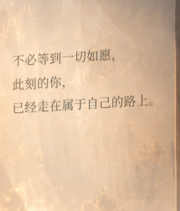

返回《心流空间》Phase 2 · Living Dreamscape
七张原背景、文字、字体、布局与已有业务保留。各页有独立持续环境动态；没有整图反复缩放、随机粒子或新的背景资源。所有视频为实际浏览器录帧。
实际修改文件、实现、测试与限制 · 全部实测数据 · Network / Performance / 交互与字形证据
性能及页面同步
| 页 | 动态rAF/s中位数 | 绘制代码均值 |
|---|
| 01 | 53.5 | 0.590 ms |
| 02 | 53.8 | 0.673 ms |
| 03 | 60.0 | 0.244 ms |
| 04 | 59.8 | 0.549 ms |
| 05 | 60.0 | 0.449 ms |
| 06 | 59.0 | 0.466 ms |
| 07 | 55.3 | 0.256 ms |
Linux Chromium，本地生产构建1440×900，每页3个4秒窗口。浏览器能力提示覆盖高质量和自适应模式，实际云硬件未变；仅测调度，不是设备GPU输出帧率。所有窗口及长帧均保留，不能据此声称每页稳定60fps。
02→03背景/UI错配仍为0，CSS过渡360ms。完整事务普通中位数1356.7ms，慢网中位数1489.7ms，均含原700ms业务模拟。仍只请求原有13个桌面背景URL；返回已访问页新增图片传输0字节。
未实测真正Chrome/Safari应用、手机GPU帧率及麦克风硬件。WebKit Linux与受控语音事件测试通过；后台hidden处理为模拟事件验证。纱帘、云、投影与镜面为现有栅格素材的局部近似，不是物理模拟。原AI、词云演示数据和字体配置不变。请在真实设备上继续主观审阅。
七页实际录屏与截图
每页约12秒，原速录制。录屏采样有额外开销，不用编码视频的30fps标记作为网页帧率证据；性能测量单独执行。
02 想象的流动
高光沿既有光带曲线流动，湖面轻微反射；麦克风仅在识别onstart后响应。
下载录屏 · 完整截图 · 起始截图
07 情绪的星群
既有星点错相呼吸、星轨光流、词语轻悬浮；按钮命中区域和数据保持原状。
下载录屏 · 完整截图 · 起始截图
镜面寄语保护

Chromium/WebKit：1440×900、1280×720、390×844安全范围及26个字形实际绘制检查通过。动态停留前后文字坐标一致；另验证WebKit镜面反光图层确实绘制。
chromium · 1920px · 七页截图
chromium · 390px · 七页截图
webkit · 1440px · 七页截图
webkit · 390px · 七页截图
三个玻璃弹窗 · 实际触发检查
减少动态效果后像素稳定，循环暂停；离开页面清理旧动画/Canvas。快速连点、输入、生成/调整、习惯选择、分享同意/拒绝、故障重试与退出重置通过。原公共词云/AI仍为既有演示实现，没有新增上传行为。